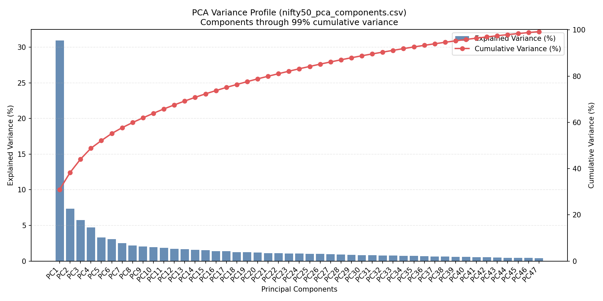
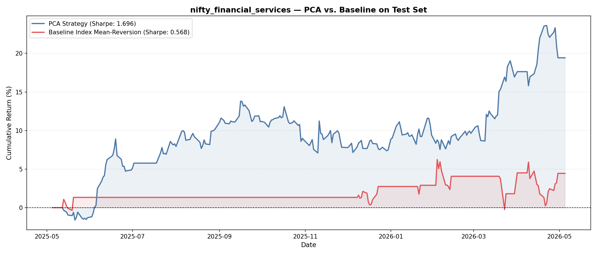
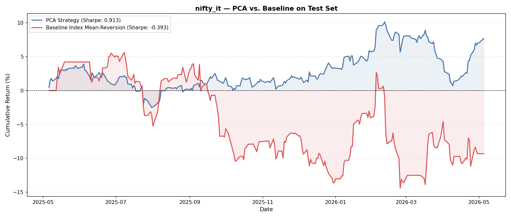
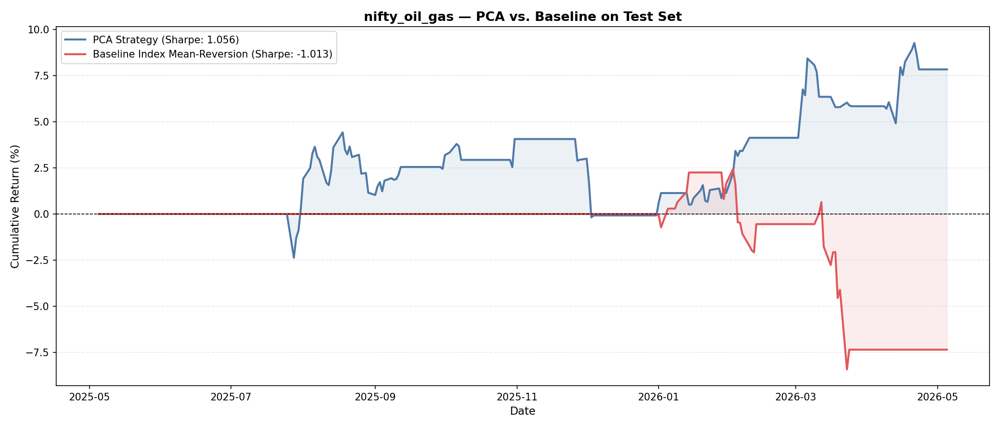
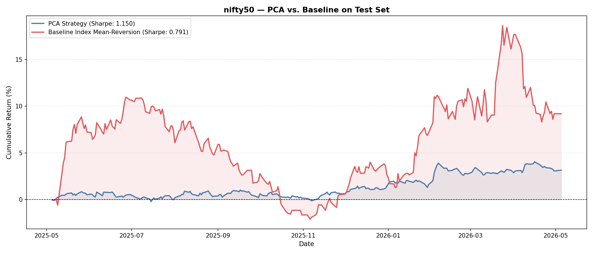
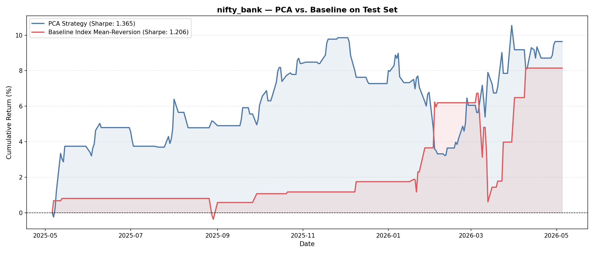
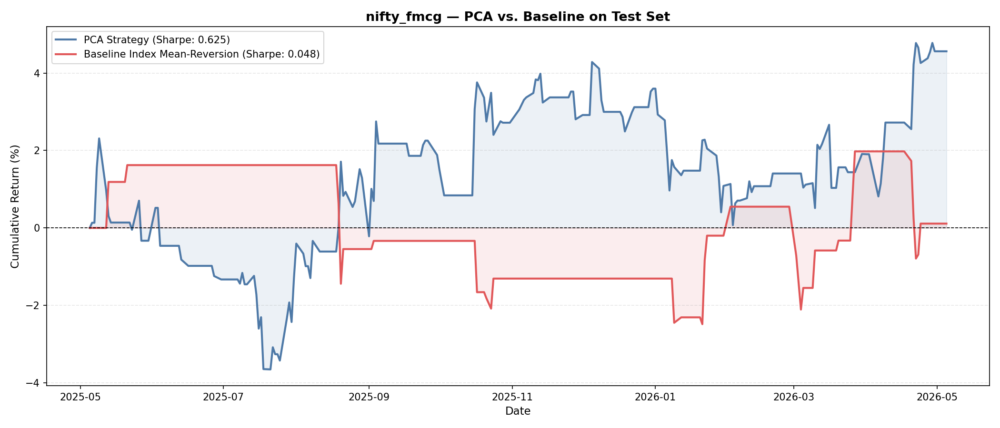
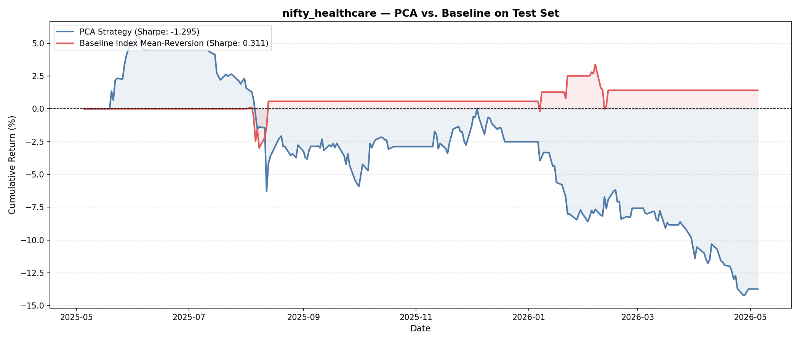
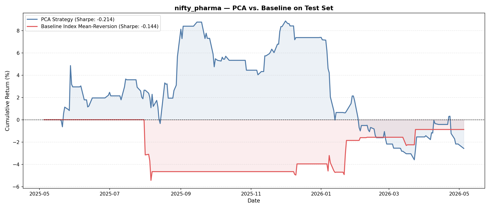
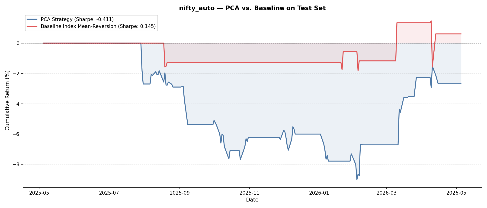

Cross-sectional residual mean reversion with rolling refits across Nifty sector indices
Research Question
Can cross-sectional residuals beat a one-factor index-level z-score baseline?
Fairness rule: both strategies use identical train-validation-test splits, identical threshold tuning protocol, and identical test evaluation horizon. Only the signal construction differs.
Data Pipeline
Minor variation due to listing history filters
Rolling walk-forward blocks
About 3 months of trading days
Nifty50, Auto, Bank, Financial Services, IT, Healthcare, Pharma, Oil and Gas, FMCG
PCA Modeling
Result: The first few PCA components capture most co-movement variance. Strategy reconstructs the common component and trades residual extremes.

Key insight: Shrinkage dampens noisy off-diagonal terms. Top PCs isolate common factors; residuals capture idiosyncratic mispricings to trade.
Signal & Hyperparameter Tuning
For stock i at time t, fitted return: r̂i,t = Σk=1K βi,k · fk,t
βi,k: loading of stock i on factor k, and fk,t: return (score) of factor k at time t.
Standardized residual: zi,t = (ri,t − r̂i,t) / σi,t,rolling
Coarse-to-Fine Optimization
Design principle: optimize thresholds on validation data to maximize Sharpe, then evaluate on held-out test period only.
Baseline
Index return: rindex,t = mean(ri,t)
Z-score: zt = (rindex,t − μrolling) / σrolling
Rolling window: 6 months to match PCA refit horizon.
Purpose: test whether PCA cross-sectional decomposition adds value beyond one-dimensional index-level mean reversion.
Test Results
Category 1
Financial Services

IT

Oil and Gas

PCA Sharpe 1.696 vs baseline 0.568, delta +1.128
PCA Sharpe 0.913 vs baseline -0.393, delta +1.306
PCA Sharpe 1.056 vs baseline -1.013, delta +2.069
Hypothesis for investigation: Financial Services, IT, and Oil & Gas constituents operate across diverse geographies, business lines, and supply chains. This diversity creates stable idiosyncratic spread behavior—each company's fundamentals and valuations drift independently. PCA successfully isolates these dislocations, enabling efficient residual mean reversion. The sector beta contributes noise rather than signal, so decomposing it away materially improves Sharpe.
Category 2
Nifty50

Bank

FMCG

Sharpe delta +0.359. PCA improves risk-adjusted profile, but baseline total return is still competitive.
Sharpe delta +0.159. Both strategies work; PCA gives a small but consistent edge.
Sharpe delta +0.577. Improvement is clear, though not as dramatic as top category.
Hypothesis for investigation: Nifty50 (broad index), Bank, and FMCG are mature, highly liquid sectors with tighter peer relationships and business model homogeneity. Idiosyncratic variance is lower; most moves are driven by shared economic and monetary factors. While PCA still extracts useful structure, the common factor remains economically important. Index mean reversion captures significant portion of this common alpha, narrowing PCA's advantage.
Category 3
Healthcare

Pharma

Auto

Healthcare often trades on event risk (USFDA outcomes, trial updates, litigation), creating jumpy stock-specific moves. Those jumps are not smooth mean-reverting residuals, so PCA residual entries can be mistimed.
Pharma constituents can be highly correlated around regulation and export demand, but that correlation shifts quickly by product cycle. Unstable factor structure weakens fixed-window PCA decomposition.
Auto is strongly exposed to common macro drivers (rates, fuel prices, financing demand). A single index-level reversal signal captures this regime effect better than cross-sectional residual trades.
Hypothesis for investigation: these three sectors combine regime-sensitive common beta with discontinuous stock-level shocks. That is a difficult environment for linear PCA residual mean reversion: factor loadings are not stable long enough, and residuals are not reliably elastic around a fixed mean.
Conclusion
Current PCA residual alpha is fragile. We need stronger evidence that high-performing indices respond to persistent structural drivers, not one-off sample luck.
Nifty Statistical Arbitrage Study - May 2026